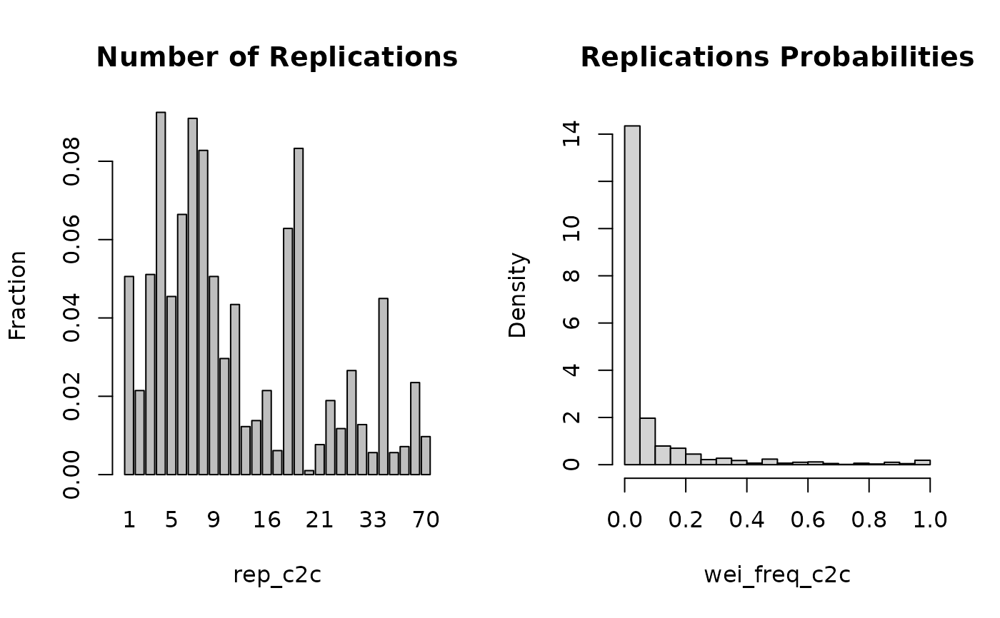
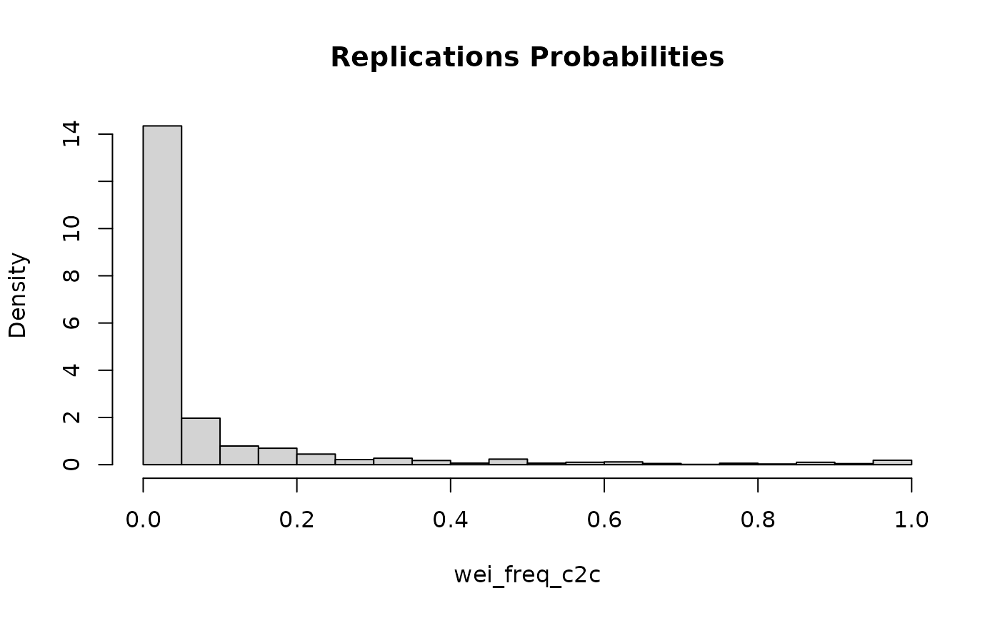
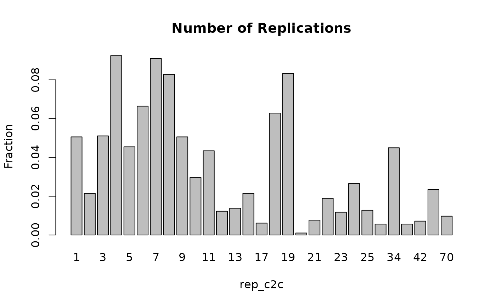

This function help to understand properties of cat2cat results. It is recommended to run it before further processing, like next iterations.
Usage
plot_c2c(data, weis = "wei_freq_c2c", type = c("both", "hist", "bar"))Examples
data("occup_small", package = "cat2cat")
occup_old <- occup_small[occup_small$year == 2008, ]
occup_new <- occup_small[occup_small$year == 2010, ]
occup_2 <- cat2cat(
data = list(
old = occup_old, new = occup_new, cat_var = "code", time_var = "year"
),
mappings = list(trans = trans, direction = "backward")
)
plot_c2c(occup_2$old, type = c("both"))

plot_c2c(occup_2$old, type = c("hist"))

plot_c2c(occup_2$old, type = c("bar"))
